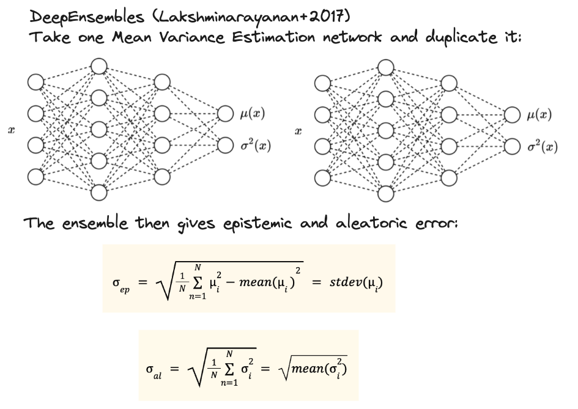
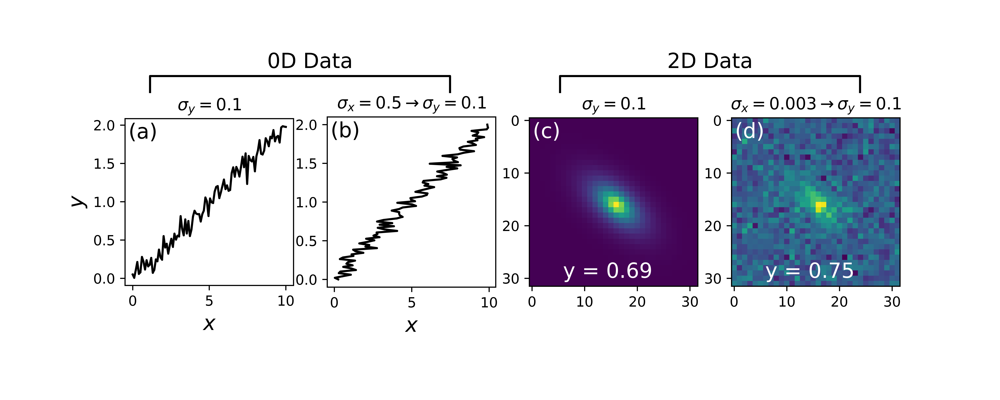
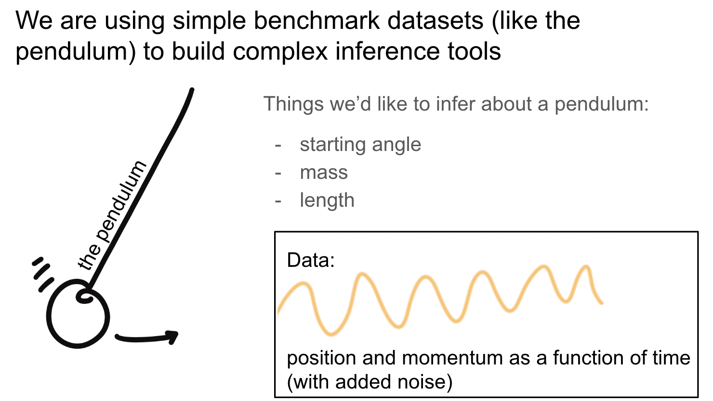
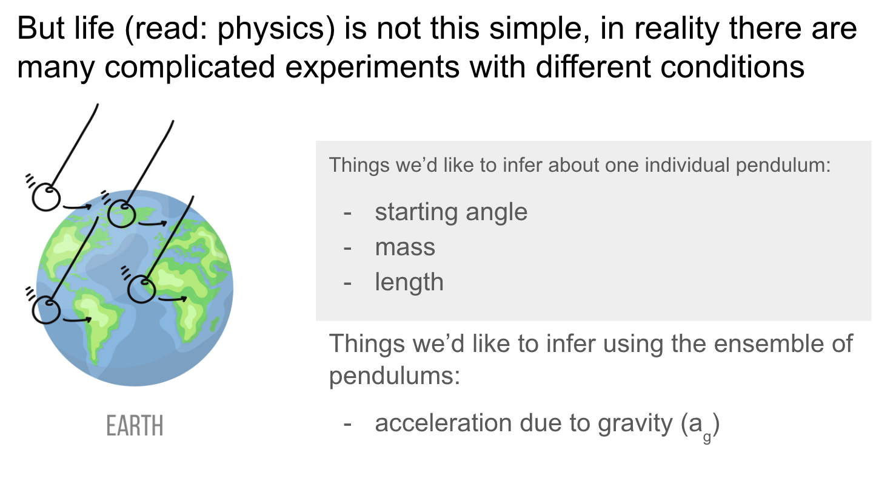
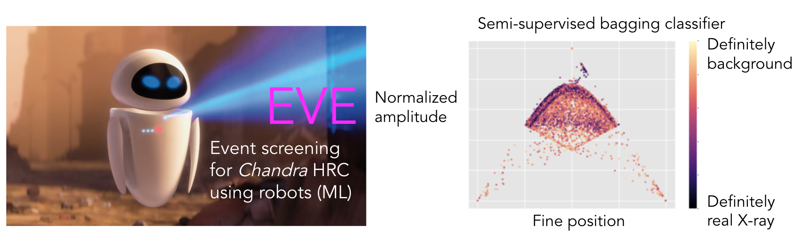

machine learning research
galaxy research
resume and cv
science communication
talks
stickers
about me
DeepUQ: Testing the fidelity of uncertainty predictions from deep learning methods
One of my roles in the Deepskies group is to develop and test tools for benchmarking and assessing uncertainty predictions from machine learning methods. I'm currently testing Deep Ensembles and Deep Evidential Regression, Deep Ensembles shown below:
My current focus is the aleatoric uncertainty shown above.

DeepDiagnostics: Assessing the quality of inference
I created DeepDiagnostics, which is a software package for diagnosing the quality of inference for different inference techniques, ranging from likelihood-based techniques such as MCMC to simulation-based inference. Simulation-based inference is an ML-enabled technique to accelerate traditionally computationally expensive inference approaches. It achieves this speed up by approximating the likelihood using a normalizing flow or similar generative technique.
Since the Deepskies lab has experience in SBI, I designed DeepDiagnostics to work in concert with mackelab's sbi software.
It includes utilities that handle data generation, saving, and lookup, as well as evaluation and plotting utilities for flexible corner plots (below) and evaluation techniques such as coverage fraction (below):
DeepDiagnostics Github, now pip installable!
See also, the SBI tutorial notebooks with accompanying diagnostics created by myself and Jason Poh: colab notebook for strong lens SBI and colab notebook for linear regression as well as the slides from an SBI tutorial talk I gave at a physics winter school.
DeepBench: Flexible benchmark datasets for machine learning research
In order to evaluate the performance of ML tools for inference, I rely upon benchmark datasets. In Deepskies lab, we have developed our own benchmark utilities (DeepBench), which produces simple astrophysical objects in a flexible framework that allows the user to control the noise properties. Using simple tools like a pendulum with stochastic noise, I am creating a methodology for comparing the bias and uncertainty in parameter estimation from various inference techniques. This type of simple dataset also allows me to experiment with comparing hierarchical to non-hierarchical inference paradigms (below). 
Hierarchical Bayesian inference and simulation based inference (SBI)
Hierarchical inference is an important tool for estimating parameters of individual data units as well as global parameters. This is especially relevant to estimating cosmological parameters, for instance in the case of multiple strong lenses in an all sky imaging survey; the goal is to estimate the individual lens parameters as well as global cosmological parameters.
Using the above uncertainty framework and DeepBench tools coupled with numpyro, I compare various state-of-the-art inference techniques such as hierarchical inference (sampling) and simulation based inference. 
^Using the benchmark pendulum dataset to compare the performance of hierarchical sampling and SBI.
Here's a link to a Google colab notebook example of running Bayesian inference on a simple linear fit using the Hamiltonian Monte Carlo capabilities of numpyro.
Harnessing machine learning to improve Chandra HRC
I worked closely with Chandra leadership to develop a machine learning framework, EVE, to distinguish between real X-ray events and background events (such as cosmic rays). An improved background identification technique is highly valued by the X-ray community, as it would greatly improve the S/N of future and archival Chandra observations. However, this is a huge challenge, as X-ray events are highly multi-dimensional (i.e., each event has information about the time of arrival, position, and energy) and we lack labelled synthetic data.
With EVE, I pursued multi-pronged approach for background classification, using multiple options for machine learning algorithms such as a supervised random forest and a semi-supervised bagging classifier that learns from X-ray observations on the fly. The figure above shows an example of the semi-supervised technique assigning probability values to events.